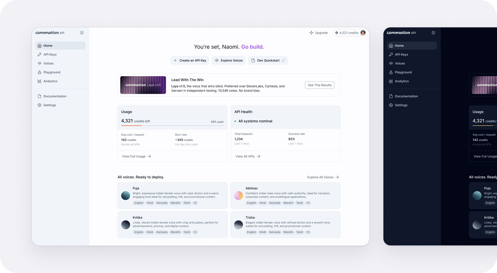
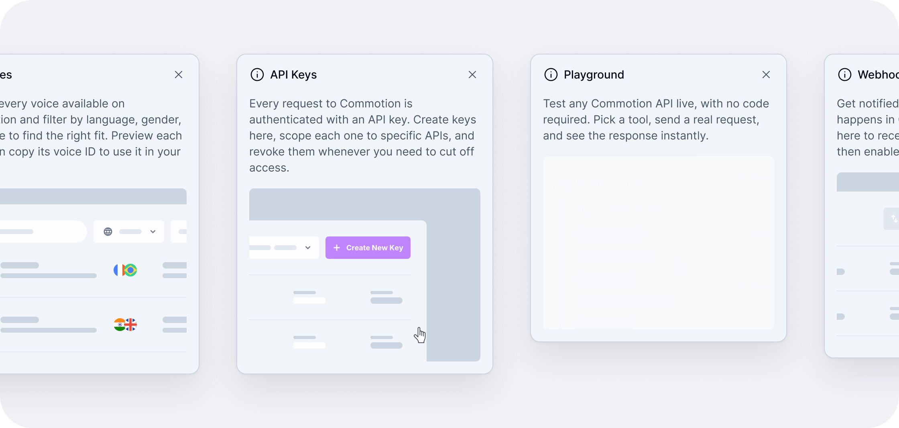
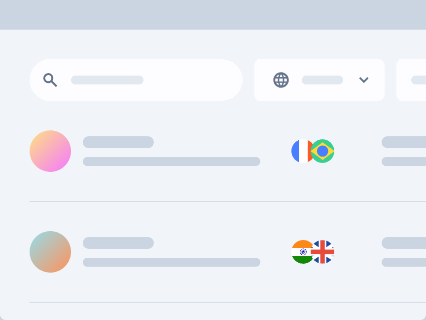
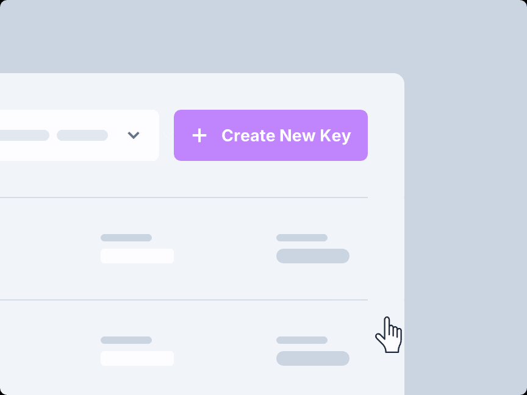
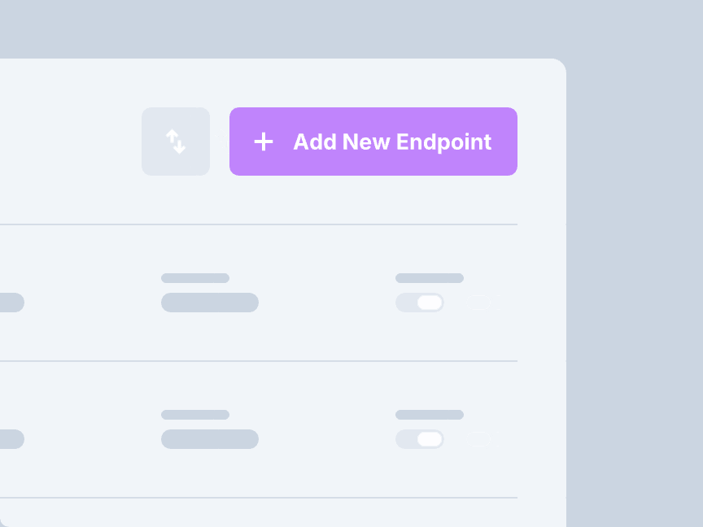
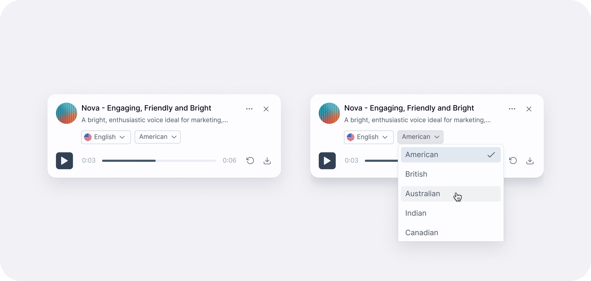
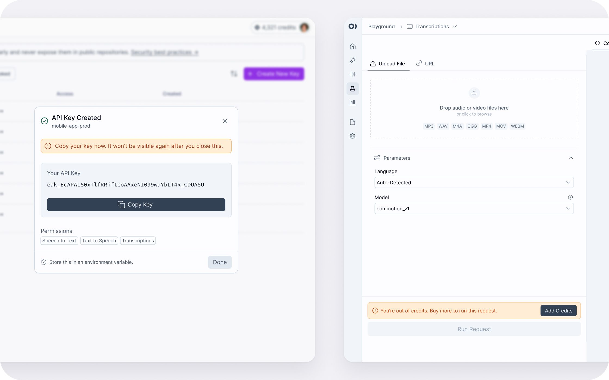
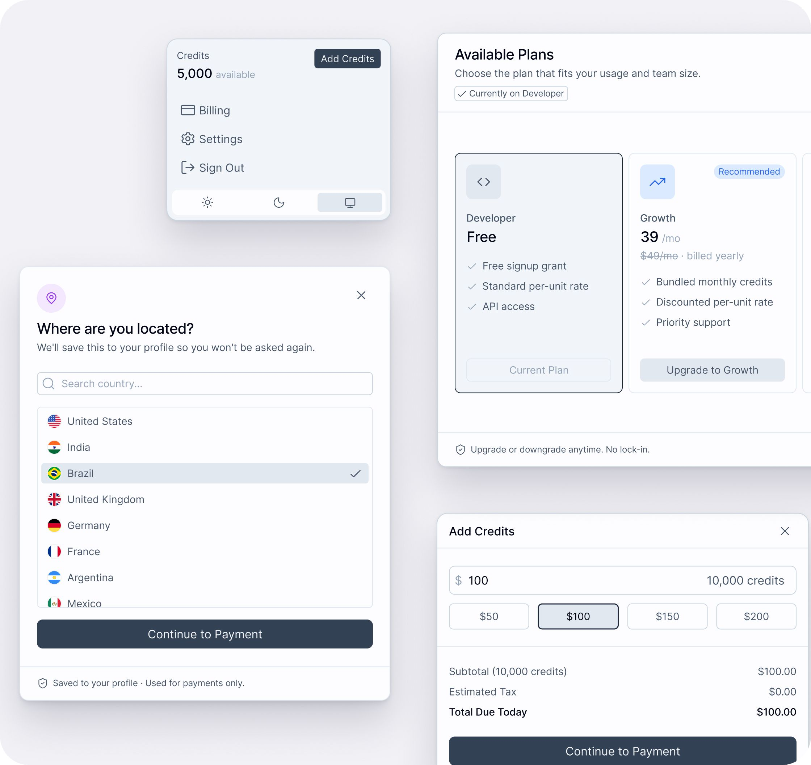

01Commotion API Platform
A self-serve platform for Commotion’s voice and language APIs, bringing API keys, voice selection, service testing, and credit management into one experience. Designed from 0 to 1 alongside engineering, with flows and edge cases informed by patterns across leading developer platforms.







